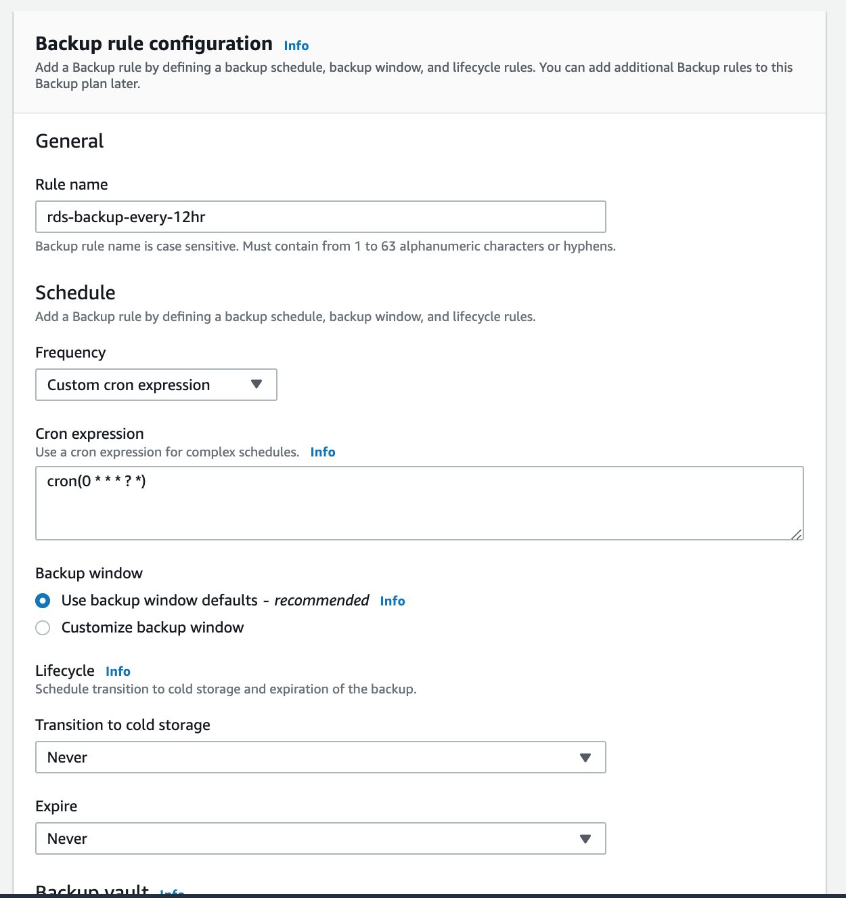

AWS Backup定時備份RDS
- 0. Intro
- 1. 認識AWS Backup
- 2. 透過Web console來建立AWS Backup
- 3. 透過Cloudformation來建立AWS Backup
- 4. 使用tags來快速filter需要備份的資源
0. Intro
有使用過AWS RDS的使用者應該都會了解在RDS本身已經有提供enable auto backup來確保daily都有一份可還原的備份。
而先前AWS也推出集中性管理的AWS Backup console來提供給使用者集中式的管理所有需要備份的計畫與排程，接下來介紹怎麼使用AWS Backup來幫production 的DB做每個小時的備份。
1. 認識AWS Backup

AWS Backup 是AWS的Centralized Backup console，以往我們在各個AWS資料存儲服務(EC2, EBS/EFS, RDS/DynamoDB等)各自備份的排程任務，都可以在新的Backup console中集中管理。
2. 透過Web console來建立AWS Backup
2.1 新增Backup Plan
首先先從web console到 AWS Console > Service > AWS Backup > Backup Plans > [Create Backup Plan]
Backup Plan Name這邊可以填入任意你可以識別的文字
接著Rule name這邊可以輸入 rds-backup-hourly，Schedule的部分因為預設的下拉選單中最短的時間是12小時，所以我們選擇Custom cron expression，填入cron(0 * * * ? *)。
其他Backup window(8小時)與lifecycle都可以是預設值，加密的Valut預設也可以用AWS Default即可。

新增Rule成功後，我們可以繼續來assign 要備份的resource給已經建立的Backup Rule。
2.2 Assign Backup Resource
AWS目前提供了兩種方式來綁定相關的resource
- 直接指定Resource ID
- 透過Tag來filter相關的resource，例如所有環境是production的資源，就可以透過env=prod這樣的方式新增。
儲存後應該就可以看到相關的資源已經列在Backup Plan下方資源清單中，這樣就可以下班了XD
BTW，前面敘述有提到Backup Window預設是8小時，而我們設定的backup是每小時備份，如果剛設定完的下一個小時沒有開始備份是正常的ＸＤ
3. 透過Cloudformation來建立AWS Backup
除了透過web console建立，我們也可以透過Cloudformation來建立整個Backup plan＆resources。
直接修改相關的Region/Account ID/DB Instance ID就可以快速的deploy這個stack了～
AWSTemplateFormatVersion: "2010-09-09"
Description: "Hourly Backup Plan for <resources?>"
Parameters:
AWSAccountID:
Type: String
Default: "<AWS Account ID>"
Resources:
DBBackupPlanWithHourlyBackups:
Type: "AWS::Backup::BackupPlan"
Properties:
BackupPlan:
BackupPlanName: "rds-prod-hourly-backup"
BackupPlanRule:
- RuleName: "RuleForHourlyBackups"
TargetBackupVault: "Default"
ScheduleExpression: "cron(0 * * * ? *)"
StartWindowMinutes: 60
Lifecycle:
DeleteAfterDays: 30
TagBasedBackupSelection:
Type: "AWS::Backup::BackupSelection"
Properties:
BackupSelection:
SelectionName: "resource-of-rds-prod-hourly-backup"
IamRoleArn: !Sub arn:aws:iam::${AWSAccountID}:role/service-role/AWSBackupDefaultServiceRole
Resources:
- !Sub arn:aws:rds:<rds region>:${AWSAccountID}:db:<RDS DB Instance Identify Name>
BackupPlanId: !Ref DBBackupPlanWithHourlyBackups
DependsOn: DBBackupPlanWithHourlyBackups
4. 使用tags來快速filter需要備份的資源
如果需要透過Tag來大量assign相關的resource，可以將上面的template中的Resources換成下面的表示方式
ListOfTags:
-
ConditionType: "STRINGEQUALS"
ConditionKey: "env"
ConditionValue: "prod"